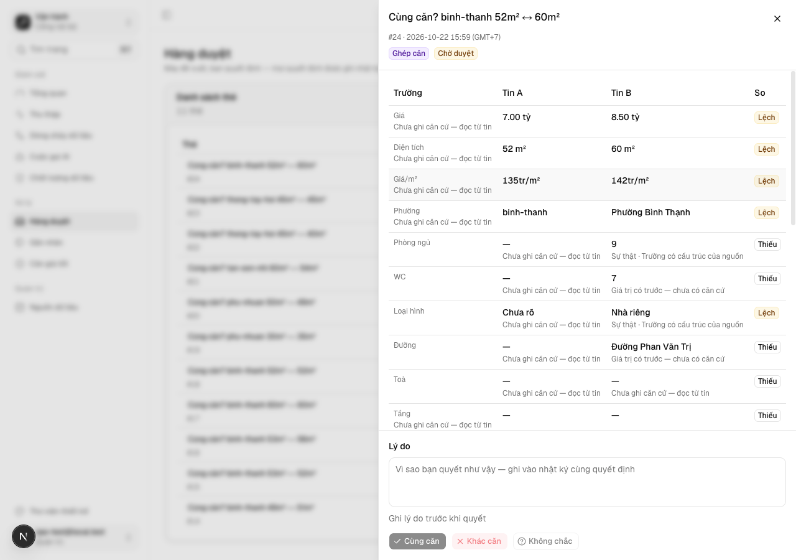
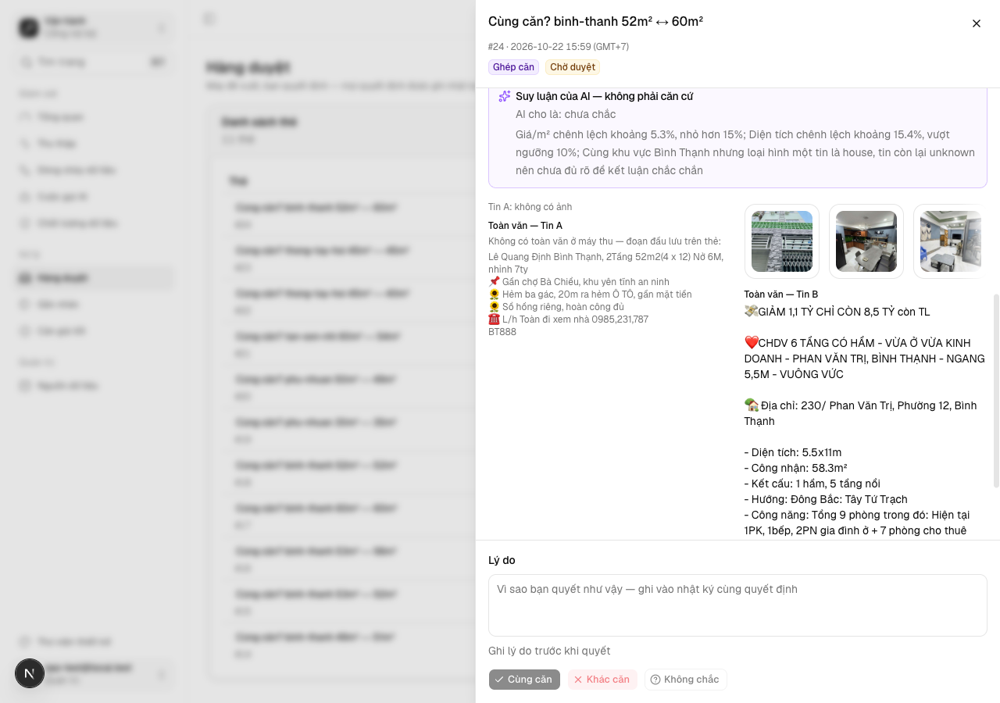
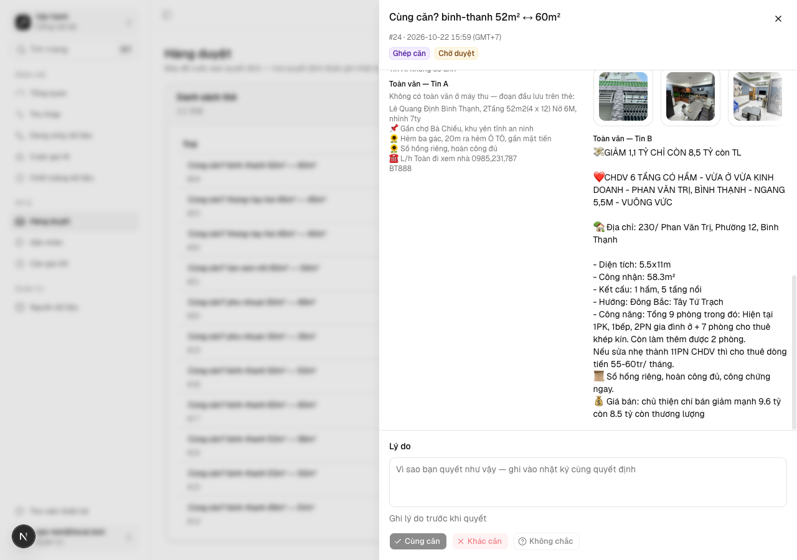
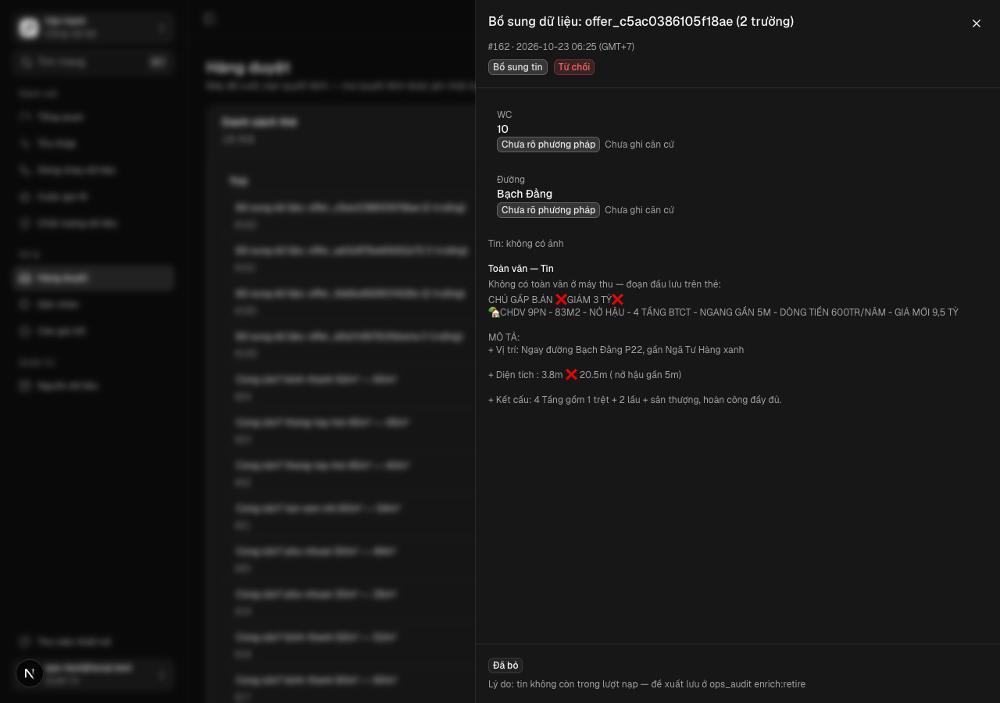
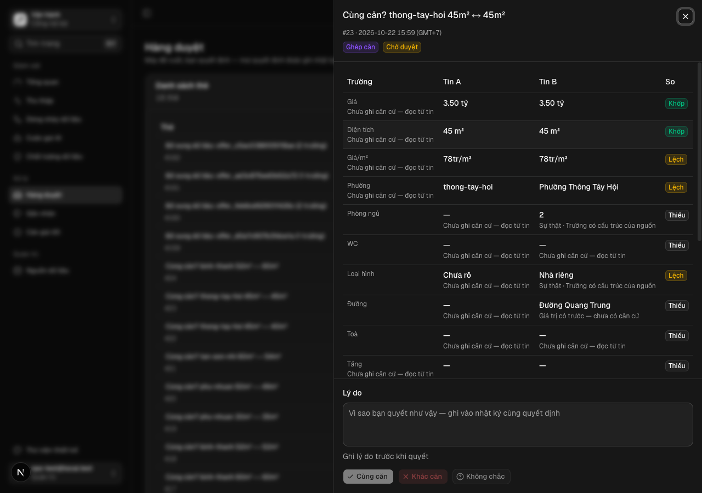
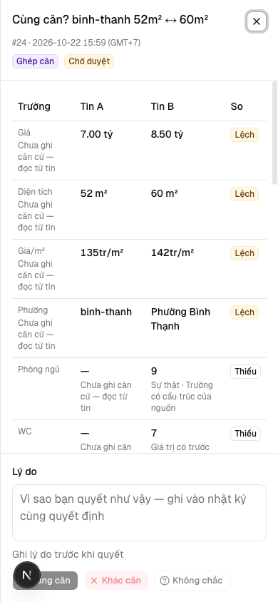
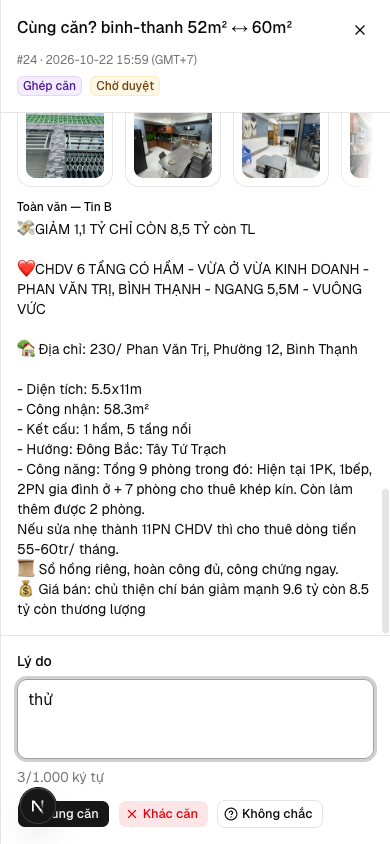
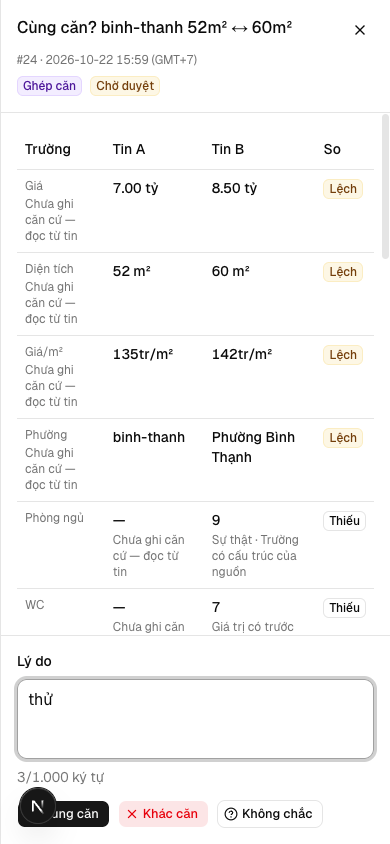

Người duyệt mở /ops/review và thấy mọi trường kèm căn cứ, ảnh tin và toàn văn tin, không có «AI tự tin %», rồi quyết kèm lý do được ghi audit cùng giao dịch
Vì sao làm
L04/L15: thẻ hiện % thay căn cứ, gợi ý «apply» gắn cứng, audit sau COMMIT. Backend ảnh đã có (PR #16).
Đã hứa
- AC-1 — Given thẻ bổ sung tin có trường đề xuất xung đột và không xung đột, When người duyệt mở sheet, Then MỌI trường
- AC-2 — Given thẻ ghép căn, When người duyệt mở sheet, Then sheet có bảng so một hàng cho mỗi trường (giá, diện tích,
- AC-3 — Given tin S03 có bài gốc dài hơn 300 ký tự và tin S06 có `payload.body`, When mở sheet, Then khối «Toàn văn»
- AC-4 — Given người duyệt vai Vận hành (`xemNoiDungTin` đúng, không phải quản trị) và tin có ảnh đã tải về máy thu, When
- AC-5 — Given thẻ ghép căn có `stage_b_score` và thẻ bổ sung tin có `fields[].confidence`, When dựng sheet và trang, Then
- AC-6 — Given thẻ ghép căn với `ai_suggestion` = `yes` và cùng thẻ với `no`, When dựng sheet, Then vùng nút quyết định
- AC-7 — Given sheet một thẻ chờ, When ô «Lý do» trống hoặc toàn khoảng trắng, Then mọi nút quyết định tắt kèm gợi ý
- AC-8 — Given thẻ chờ (ghép căn và bổ sung tin) và `reason` hợp lệ, When quyết approved/rejected/deferred, Then trong
- AC-9 — Given vai viewer ở máy thu và nhánh cloud (bảng `review_queue` vắng), When mở /ops/review, Then hai nhánh hiện
- AC-10 — Given dev server với dữ liệu `review_queue` local thật, When chụp sheet ghép căn và sheet bổ sung tin ở 390 px và
Thiết kế
docs/superpowers/specs/2026-10-30-the-duyet-du-can-cu-design.md
Quyết định
- 2026-10-30 · Máy · approach · S1 — Đã tra tri thức: PL3Kho đã khai tri_thuc — bước thiết kế tra trang trước khi chọn.
- 2026-10-30 · Máy · approach · S1 — Phạm vi PL3 là C0.2 + C0.3: căn cứ mọi trường, ảnh, toàn văn, bỏ độ tự tin và gợi ý mặc định, lý do ghi audit cùng giao dịch.Bản phạm vi phan-loai-2310 định nghĩa C0.2/C0.3 đúng như câu giao PL3; dòng «PL3 gộp vào PL23» ở §7.0 review có trước lời Mạnh 30/10 xếp PL3 thành làn U1.
- 2026-10-30 · Máy · descope · S1 — KHÔNG làm thẻ duyệt v2 (phát biểu mọi nguồn theo lớp, đoạn trích tô trong toàn văn, bất đồng mọi cặp, nhãn đo) — để PL23.PL23 trong lo-trinh.json dựng trên PL3 và mang đúng câu giao đó (OOS-1).
- 2026-10-30 · Máy · approach · S1 — Căn cứ của từng trường đọc từ sale_offers.field_provenance (lớp căn cứ + phương pháp của PL15), nhãn theo CONTEXT.md; trường chưa có phát biểu ghi «Chưa ghi căn cứ — đọc từ tin».CONTEXT.md định nghĩa Lớp căn cứ là thang của phát biểu; PL15 đã ghi field_provenance cho 28.272/28.646 tin ở DB local.
- 2026-10-30 · Máy · approach · S1 — Bỏ «Điểm B» (stage_b_score) khỏi thẻ ghép căn; căn cứ là bảng so từng trường.RV-L04 ghi chính số Stage B là con số hiện như độ tự tin mà không phải độ tự tin của ai.
- 2026-10-30 · Máy · approach · S1 — Lượt bổ sung tin ghi ai_suggestion NULL cho thẻ mới; thẻ không đọc ai_suggestion để chọn hay tô nút.RV-L04 nêu ai_suggestion='apply' gắn cứng mồi người bấm Áp.
- 2026-10-30 · Máy · descope · S1 — KHÔNG sửa evidence hay ai_suggestion của các dòng review_queue đã có (OOS-3); toàn văn và căn cứ đọc lúc tải trang.Sửa là ghi dữ liệu hàng loạt vào DB máy thu; F6 của review ghi mỗi bước ghi DB vẫn chờ Mạnh gật.
- 2026-10-30 · Máy · approach · S1 — Lý do ghi vào review_queue.decision_note và ops_audit.detail.ly_do trong cùng transaction; không migration.Cột decision_note có từ migration 029; TV1 đã đưa audit vào cùng transaction.
- 2026-10-30 · Máy · approach · S1 — Hỏi-1: vai Vận hành thấy ảnh ĐÃ TẢI về máy thu (qua /api/zalo-media mở cho vai ops); ảnh chỉ có URL gốc vẫn chỉ quản trị viên thấy — giữ hay đổi?AGENTS.md luật 6 cho ảnh tin rao tới vai ops (sửa đổi ADR-0007 26/10), nhưng URL gốc S06 mang tên miền nguồn thật (tầng A); review-media-backend 23/10 chọn chỉ admin khi ảnh còn là tầng A.
- 2026-10-30 · Máy · approach · S1 — Hỏi-2: lý do bắt buộc cho MỌI quyết định (Áp, Bỏ, Cùng căn, Khác căn, Để sau), tối đa 1.000 ký tự — giữ hay chỉ bắt buộc khi bác/hoãn?Câu giao PL3 «quyết kèm lý do» và TV13 «thiếu lý do: không gửi được» không tách loại quyết định.
- 2026-10-30 · Máy · approach · S1 — Hỏi-3: ngưỡng nghiệm thu — trong 7 ngày kể từ ngày gộp, ≥ 10 thẻ được quyết, 100% dòng review.decide mới có ly_do, 0 thẻ phải mở tin gốc ngoài /ops/review — giữ hay đổi?Ô cơ hội mở từ lộ trình chưa có ngưỡng; ba vế đo được bằng ops_audit và phiên nghiệm thu.
- 2026-10-30 · Máy · approach · S1 — Chạy design-pass trên route thật /ops/review của dev server dãy U1 (:3460), không dựng route proto.Sheet đổi bố cục (bảng so, toàn văn, ô lý do) — Cổng Phạm vi duyệt trên bản bấm được; config design_pass.proto_route chỉ route thật.
- 2026-10-30 · Máy · descope · S1 — KHÔNG sửa evidence hay ai_suggestion của các dòng review_queue đã có (OOS-3); thẻ không đọc ai_suggestion của thẻ bổ sung tin ở bất kỳ chỗ nào (AC-6 thêm vế bổ sung tin), toàn văn và căn cứ đọc lúc tải trang.Đo DB local 30/10: 0 thẻ bổ sung tin đang chờ; 4 dòng mang 'apply' đều đã bác (rejected) — lệnh UPDATE về NULL không đổi thẻ chờ nào, còn đường đọc cột đã bị AC-6 khoá.
- 2026-10-30 · Máy · approach · S1 — Hỏi-3: ngưỡng nghiệm thu — trong 7 ngày kể từ khi app ở máy thu chạy bản đã gộp, ≥ 10 thẻ được quyết, 100% dòng review.decide mới có ly_do, 0 thẻ phải mở tin gốc ngoài /ops/review — giữ hay đổi?Ô cơ hội mở từ lộ trình chưa có ngưỡng; ba vế đo được bằng ops_audit và phiên nghiệm thu; mốc lấy lúc máy thu chạy bản mới (phản biện P1) thay ngày gộp.
- 2026-10-30 · Người · seal · gate1 —
- 2026-10-30 · Người (Mạnh) · approach · gate1 — Hỏi-1: theo khuyến nghị — vai Vận hành thấy ảnh đã tải về máy thu; ảnh chỉ có URL gốc vẫn chỉ quản trị viên thấy.Mạnh gõ «duyệt» không kèm sửa ở Cổng Phạm vi; lời mời ghi ba câu là nháp theo khuyến nghị, đổi câu nào thì ghi kèm sau «duyệt».
- 2026-10-30 · Người (Mạnh) · approach · gate1 — Hỏi-2: theo khuyến nghị — lý do bắt buộc cho mọi quyết định, tối đa 1.000 ký tự.Mạnh gõ «duyệt» không kèm sửa ở Cổng Phạm vi; lời mời ghi ba câu là nháp theo khuyến nghị.
- 2026-10-30 · Người (Mạnh) · approach · gate1 — Hỏi-3: theo khuyến nghị — ngưỡng nghiệm thu 7 ngày từ lúc máy thu chạy bản đã gộp: ≥ 10 thẻ quyết, 100% review.decide có ly_do, 0 thẻ phải mở tin gốc ngoài /ops/review.Mạnh gõ «duyệt» không kèm sửa ở Cổng Phạm vi; lời mời ghi ba câu là nháp theo khuyến nghị.
- 2026-10-30 · Máy · approach · S2 — Sửa ca test cũ của hồ sơ đã ký mà thiết kế PL3 làm đổi (review-card: body mang reason, nút chờ lý do; review-media/viewer-the-duyet: ảnh đã tải tới vai ops) thay vì giữ hành vi cũ; mỗi ca đổi một dòng sổ fix.Hỏi-1 và Hỏi-2 Mạnh duyệt ở Cổng Phạm vi đổi đúng hành vi các ca đó đo; giữ ca cũ thì suite app_ui đỏ theo thiết kế.
- 2026-10-30 · Máy · fix · S3 — app/tests/review-card.test.tsx AC-9, AC-11 và app/tests/review-queue.test.tsx RQ-AC-5: gõ lý do trước khi bấm, body mong đợi thêm reason; «Áp dụng» thẻ thường chờ lý do thay vì bật ngay.Hỏi-2 (Mạnh duyệt 30/10): lý do bắt buộc cho mọi quyết định — hành vi các ca đo đã đổi theo thiết kế.
- 2026-10-30 · Máy · fix · S3 — app/tests/media-canonical.test.tsx NH-AC-5 và app/tests/zalo-media.test.tsx AC-2: vai ops nhận ảnh đã tải (chỉ origin local) và chế độ snapshot của /api/zalo-media; user/viewer/khách vẫn {} và 404; ?path= vẫn 404 với ops.Hỏi-1 (Mạnh duyệt 30/10): ảnh đã tải tới vai Vận hành, URL gốc chỉ quản trị viên.
- 2026-10-30 · Máy · fix · S3 — app/tests/review-queue.test.tsx RQ-AC-3, RQ-AC-6 và app/tests/ops-nhan-theo-context.test.tsx ON12-AC-1, ON12-AC-7: sheet mong «Lý do» thay «Điểm B» (kèm kiểm vắng «Điểm B»); ReviewItem thêm decision_note; danh sách tệp quét thêm ba tệp sheet mới; nhãn AI thành «AI cho là: …».Thiết kế PL3 bỏ Điểm B (RV-L04), thêm lý do đã ghi, thêm ba thành phần sheet và đổi chữ suy luận AI.
- 2026-10-30 · Máy · fix · S3 — Toàn văn đọc bài theo post_ids cho MỌI nguồn có bài ở stg_zalo_posts (S03 và S05), không chỉ S03; tên nhóm vẫn chỉ hiện cho S03. OOS-5 vì thế hẹp hơn chữ đã duyệt: S05 có toàn văn.Đo DB local 30/10: 28/28 tin S05 có bài ở stg_zalo_posts và cả 11 thẻ chờ là cặp S05↔S06 — chỉ đọc S03 thì Tin A của mọi thẻ thật hiện «Không có toàn văn» (đúng lỗ P1 của gap-probe).
- 2026-10-30 · Máy · fix · S3 — app/tests/quyen-bon-vai.test.tsx: ô route review/[id]/decide gửi body kèm reason «kiểm quyền».Hỏi-2: route trả 400 khi thiếu lý do — ô «qua» của ma trận quyền phải chạy nghiệp vụ thật nên cần lý do hợp lệ.
- 2026-10-30 · Máy · fix · S4-r1 — scripts/check-portal-compliance.mjs mục 6: bất biến zalo-media đổi từ «isAdmin chặn trước mọi đọc tệp» sang «xemNoiDungTin chặn trước mọi đọc tệp, nhánh ?path= chặn isAdmin trước lần đọc của nó», kèm chiều đỏ bản sao bỏ isAdmin ở ?path=.S4 r1 REJECT vì lệnh suite check-portal-compliance thoát 1 — bất biến cũ trái Hỏi-1 (Mạnh duyệt): ảnh đã tải tới vai Vận hành, staging OpenClaw vẫn chỉ admin.
Bằng chứng
Các eval
| Eval | Tiêu chí | Loại | Verdict | run_id | verified_at |
|---|---|---|---|---|---|
| E1 | AC-1 | test | PASS | minted-the-duyet-du-can-cu-E1-r1 | 2026-10-30T06:13:49Z |
| E2 | AC-2 | test | PASS | minted-the-duyet-du-can-cu-E2-r1 | 2026-10-30T06:13:49Z |
| E3 | AC-2 | test | PASS | minted-the-duyet-du-can-cu-E3-r1 | 2026-10-30T06:13:49Z |
| E4 | AC-3 | test | PASS | minted-the-duyet-du-can-cu-E4-r1 | 2026-10-30T06:13:49Z |
| E5 | AC-4 | test | PASS | minted-the-duyet-du-can-cu-E5-r1 | 2026-10-30T06:13:49Z |
| E6 | AC-5 | test | PASS | minted-the-duyet-du-can-cu-E6-r1 | 2026-10-30T06:13:49Z |
| E7 | AC-6 | test | PASS | minted-the-duyet-du-can-cu-E7-r1 | 2026-10-30T06:13:49Z |
| E8 | AC-6 | test | PASS | minted-the-duyet-du-can-cu-E8-r1 | 2026-10-30T06:13:49Z |
| E9 | AC-7 | test | PASS | minted-the-duyet-du-can-cu-E9-r1 | 2026-10-30T06:13:49Z |
| E10 | AC-8 | test | PASS | minted-the-duyet-du-can-cu-E10-r1 | 2026-10-30T06:13:49Z |
| E11 | AC-9 | test | PASS | minted-the-duyet-du-can-cu-E11-r1 | 2026-10-30T06:13:49Z |
| E12 | AC-9 | test | PASS | minted-the-duyet-du-can-cu-E12-r1 | 2026-10-30T06:13:49Z |
| E13 | AC-10 | ui-check | PASS | E13-the-duyet-du-can-cu-20261030 | 2026-10-30T06:13:49Z |
| E14 | AC-10 | script | PASS | minted-the-duyet-du-can-cu-E14-r1 | 2026-10-30T06:13:49Z |
| E15 | AC-10 | script | PASS | design-gate-654d8df638 | 2026-10-30T06:13:49Z |
| E16 | AC-10 | test | PASS | minted-the-duyet-du-can-cu-E16-r1 | 2026-10-30T06:13:49Z |
Chi tiết từng eval
PASS E1 · test
AC-1: Given thẻ bổ sung tin có trường đề xuất xung đột và không xung đột, When người duyệt mở sheet, Then MỌI trường
carry-forward tu round 1 — delta khong cham paths cua eval
PASS E2 · test
AC-2: Given thẻ ghép căn, When người duyệt mở sheet, Then sheet có bảng so một hàng cho mỗi trường (giá, diện tích,
carry-forward tu round 1 — delta khong cham paths cua eval
PASS E3 · test
AC-2: Given thẻ ghép căn, When người duyệt mở sheet, Then sheet có bảng so một hàng cho mỗi trường (giá, diện tích,
carry-forward tu round 1 — delta khong cham paths cua eval
PASS E4 · test
AC-3: Given tin S03 có bài gốc dài hơn 300 ký tự và tin S06 có `payload.body`, When mở sheet, Then khối «Toàn văn»
carry-forward tu round 1 — delta khong cham paths cua eval
PASS E5 · test
AC-4: Given người duyệt vai Vận hành (`xemNoiDungTin` đúng, không phải quản trị) và tin có ảnh đã tải về máy thu, When
carry-forward tu round 1 — delta khong cham paths cua eval
PASS E6 · test
AC-5: Given thẻ ghép căn có `stage_b_score` và thẻ bổ sung tin có `fields[].confidence`, When dựng sheet và trang, Then
carry-forward tu round 1 — delta khong cham paths cua eval
PASS E7 · test
AC-6: Given thẻ ghép căn với `ai_suggestion` = `yes` và cùng thẻ với `no`, When dựng sheet, Then vùng nút quyết định
carry-forward tu round 1 — delta khong cham paths cua eval
PASS E8 · test
AC-6: Given thẻ ghép căn với `ai_suggestion` = `yes` và cùng thẻ với `no`, When dựng sheet, Then vùng nút quyết định
carry-forward tu round 1 — delta khong cham paths cua eval
PASS E9 · test
AC-7: Given sheet một thẻ chờ, When ô «Lý do» trống hoặc toàn khoảng trắng, Then mọi nút quyết định tắt kèm gợi ý
carry-forward tu round 1 — delta khong cham paths cua eval
PASS E10 · test
AC-8: Given thẻ chờ (ghép căn và bổ sung tin) và `reason` hợp lệ, When quyết approved/rejected/deferred, Then trong
carry-forward tu round 1 — delta khong cham paths cua eval
PASS E11 · test
AC-9: Given vai viewer ở máy thu và nhánh cloud (bảng `review_queue` vắng), When mở /ops/review, Then hai nhánh hiện
carry-forward tu round 1 — delta khong cham paths cua eval
PASS E12 · test
AC-9: Given vai viewer ở máy thu và nhánh cloud (bảng `review_queue` vắng), When mở /ops/review, Then hai nhánh hiện
carry-forward tu round 1 — delta khong cham paths cua eval
PASS E13 · ui-check
AC-10: Given dev server với dữ liệu `review_queue` local thật, When chụp sheet ghép căn và sheet bổ sung tin ở 390 px và









carry-forward tu round 1 — delta khong cham paths cua eval
PASS E14 · script
AC-10: Given dev server với dữ liệu `review_queue` local thật, When chụp sheet ghép căn và sheet bổ sung tin ở 390 px và
carry-forward tu round 1 — delta khong cham paths cua eval
PASS E15 · script
AC-10: Given dev server với dữ liệu `review_queue` local thật, When chụp sheet ghép căn và sheet bổ sung tin ở 390 px và
carry-forward tu round 1 — delta khong cham paths cua eval
PASS E16 · test
AC-10: Given dev server với dữ liệu `review_queue` local thật, When chụp sheet ghép căn và sheet bổ sung tin ở 390 px và
carry-forward tu round 1 — delta khong cham paths cua eval
Vòng verify
- Round 1: không eval nào đỏ; lệnh suite `node scripts/check-portal-compliance.mjs` (không gắn eval) đỏ ở kiểm tra «zalo-media: isAdmin chặn trước stat/readFile» — diff đã đổi rào đầu của serveZaloMedia khỏi isAdmin nên kiểm tra tĩnh của cổng portal không còn thấy dạng cũ. Trả về giai đoạn triển khai.
- Round 2: sửa kiểm tra cổng zalo-media theo gate xemNoiDungTin + admin ở ?path= (commit ff22a187); sáu lệnh suite chạy lại đều xanh, trong đó cổng portal báo «ĐẠT»; 16 eval carry-forward từ vòng 1 vì delta không chạm paths của eval. Verdict PASS.
Tài nguyên
| Khối | Tác tử | Token đầu ra |
|---|---|---|
| S4 round 1 | 19 | 102.198 |
| S4 round 2 | 12 | 33.217 |
2 lượt chấm · tổng 135.415 token
Giới hạn và ngoài hợp đồng
- OOS-1: Thẻ duyệt v2 — phát biểu của mọi nguồn theo lớp, đoạn trích tô trong toàn văn, bất đồng mọi cặp, quyết định thành nhãn đo (PL23, dựng trên PL3).
- OOS-2: Duyệt thẻ trên cloud kèm lý do (TV13).
- OOS-3: Sửa `review_queue.evidence` hay `ai_suggestion = 'apply'` của các dòng đã có.
- OOS-4: Phát biểu (căn cứ có lớp) cho giá, diện tích, giá/m², phường, tầng — ngoài trục của PL15.
- OOS-5: Toàn văn cho S05 và nguồn chưa có bài gốc ở máy thu.
Giao
chưa ghi quan sát production
Giá trị
- Câu hỏi phép đo trả lời: người duyệt có quyết được thẻ chỉ bằng những gì sheet /ops/review hiện ra, và mọi quyết định có lý do ghi audit không? — chưa đo
- Kết quả nào là SỐNG: trong 7 ngày kể từ khi app ở máy thu chạy bản đã gộp, ≥ 10 thẻ được quyết ở máy thu; 100% dòng `ops_audit` `review.decide` mới có `ly_do` không rỗng; phiên nghiệm thu ghi 0 thẻ người duyệt phải mở tin gốc ngoài /ops/review mới quyết được. — chưa đo
- Kết quả nào là CHẾT: có dòng `review.decide` mới thiếu `ly_do`, hoặc từ 2 thẻ trở lên phải mở tin gốc ngoài /ops/review. — chưa đo
- Timebox: 7 ngày kể từ khi app ở máy thu chạy bản đã gộp (phiên nghiệm thu ghi sha + giờ khởi động lại). — chưa đo